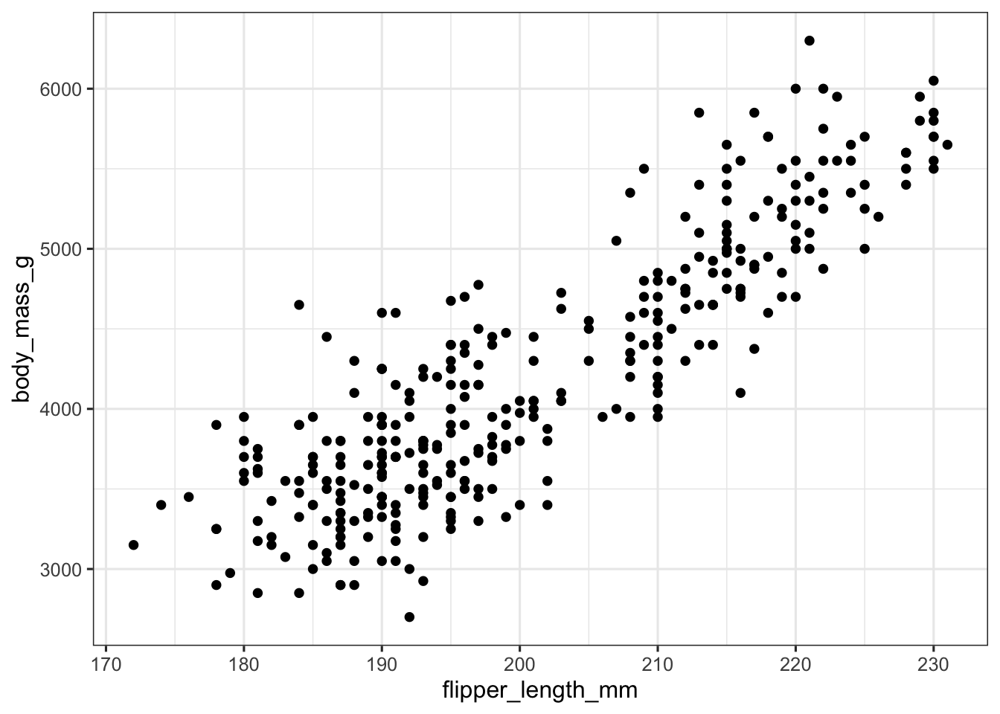
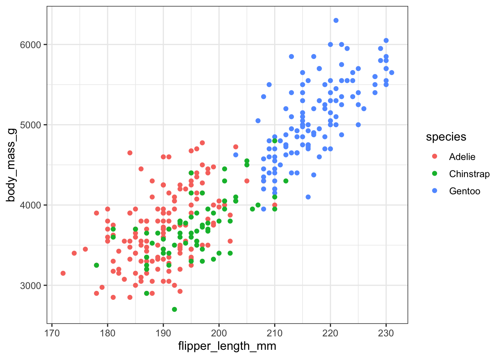
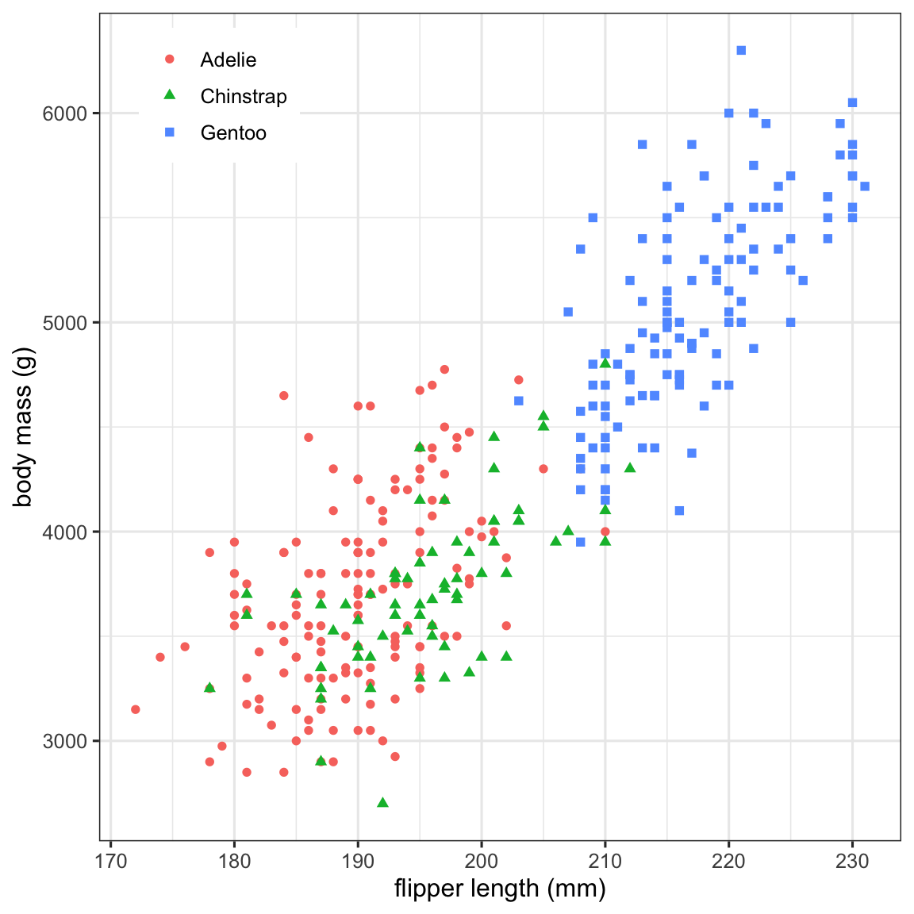
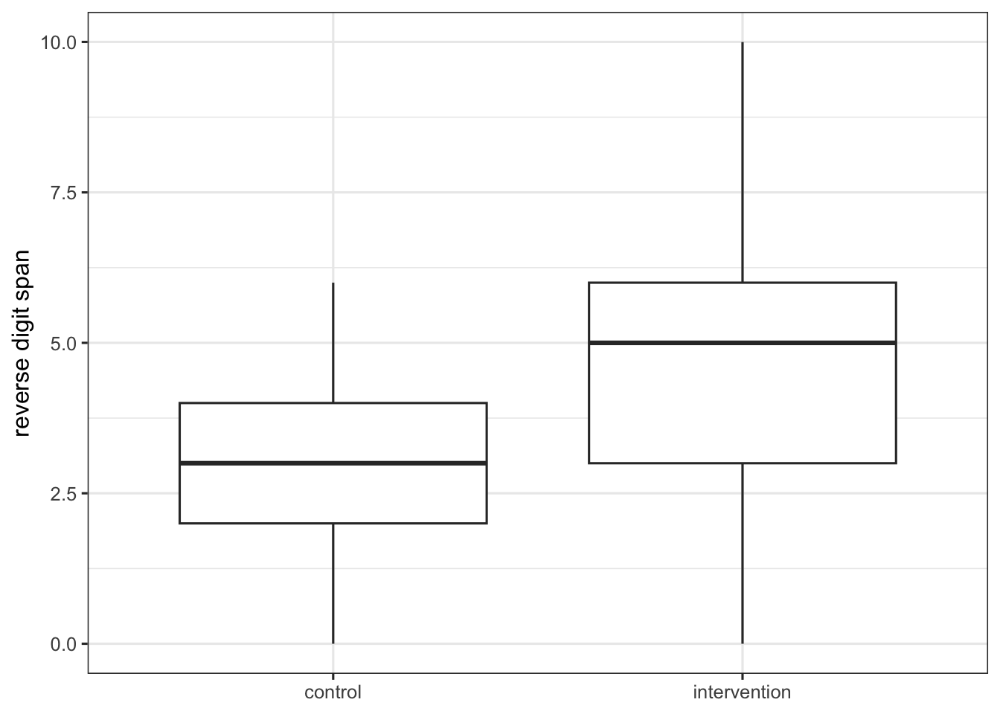
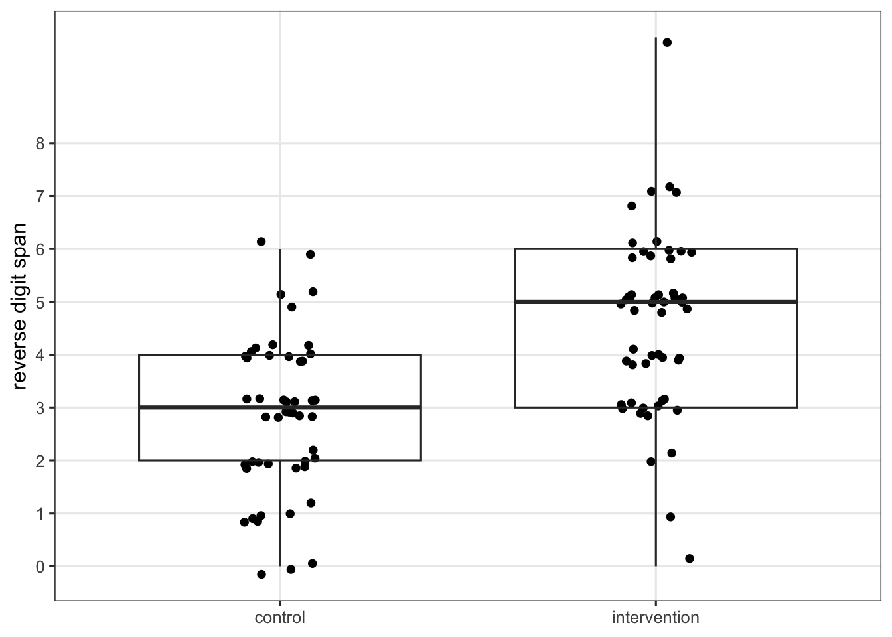
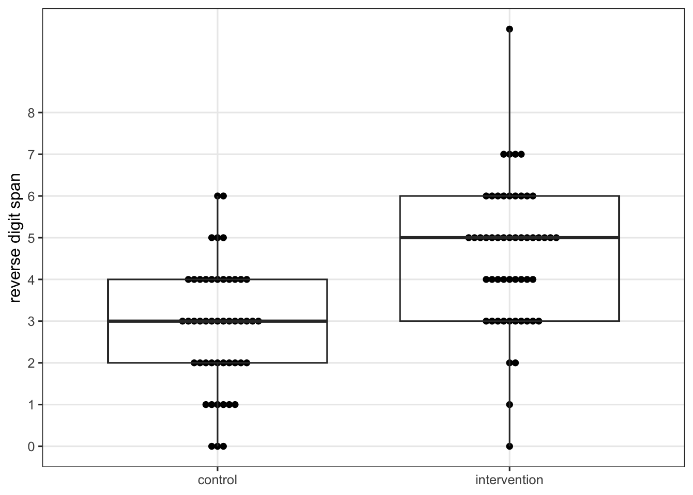
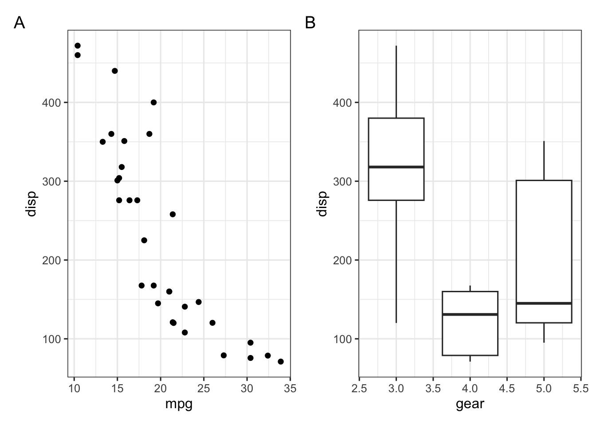

9 Visualization using ggplot2
A very flexible approach to graphing in R uses the ggplot2 package (take a look at the overview on the package website).
Why gg? GG stands for “grammar of graphics”, as discussed by Wickham (2021). Loading tidyverse also gives you ggplot2.
Let’s work through an example first, using some data we have on weight and flipper length of 3 different species of penguins.
Code
# install.packages("palmerpenguins")
library(palmerpenguins)
data(penguins)
penguins |>
select(species, body_mass_g, flipper_length_mm)# A tibble: 344 × 3
species body_mass_g flipper_length_mm
<fct> <int> <int>
1 Adelie 3750 181
2 Adelie 3800 186
3 Adelie 3250 195
4 Adelie NA NA
5 Adelie 3450 193
6 Adelie 3650 190
7 Adelie 3625 181
8 Adelie 4675 195
9 Adelie 3475 193
10 Adelie 4250 190
# ℹ 334 more rowsSuppose we want to make a scatter plot with flipper length on the x-axis, and body mass on the y-axis. We set this information up in the ggplot() function like this:
and then add (with +) geom_point() to say we want to show the data with points. Note the warning which points out that data for 2 animals were missing and were not included in the plot.
Code
ggplot(aes(x = flipper_length_mm, y = body_mass_g),
data = penguins) +
geom_point()Warning: Removed 2 rows containing missing values or values outside the scale range
(`geom_point()`).
We cannot see which animal is which species yet, but if we wanted to make each species a different color, we can add a color option:
Code
ggplot(aes(x = flipper_length_mm, y = body_mass_g,
color = species),
data = penguins) +
geom_point()Warning: Removed 2 rows containing missing values or values outside the scale range
(`geom_point()`).
Adding a few other options, we have a plot that could be used later in a publication or presentation.
Code
ggplot(aes(x = flipper_length_mm, y = body_mass_g,
color = species, shape = species),
data = penguins) +
geom_point() +
xlab("flipper length (mm)") +
ylab("body mass (g)") +
guides(color = guide_legend(NULL),
shape = guide_legend(NULL)) +
theme(legend.position = "inside",
legend.position.inside = c(0.15, 0.9))Warning: Removed 2 rows containing missing values or values outside the scale range
(`geom_point()`).
Let’s see how to make a boxplot.
Code
Warning: Removed 2 rows containing non-finite outside the scale range
(`stat_boxplot()`).
Now let’s try to make a boxplot for the primary outcome in our RCT, by treatment.
Code
set.seed(20261019)
n <- 60
dat <- tibble(study_id = 1:(2 * n),
first = sample(LETTERS, 2 * n, replace = TRUE),
last = sample(LETTERS, 2 * n, replace = TRUE),
inclusion_over17 = 1,
inclusion2 = 1, inclusion3 = 1, inclusion4 = 1,
exclusion1 = 0, exclusion2 = 0,
screened = 1,
informed_consent = rbinom(2 * n, 1, 0.9),
endpoints = rbinom(2 * n, 1, 0.9),
age_today = floor(runif(2 * n, 25, 45)),
gender = rbinom(2 * n, 2, 0.250),
video_games = rbinom(2 * n, 4, 0.2),
randomization_group = rep(0:1, n)) |>
mutate(reverse_digit = rnorm(2 * n, 3 + 2 * randomization_group, 1.5),
reverse_digit = round(reverse_digit),
cold_pressor = rnorm(2 * n, 60 - 10 * randomization_group, 20),
cold_pressor = round(cold_pressor),
video_challenge = rbinom(2 * n, 1, 0.2 + 0.3 * randomization_group)) |>
mutate(across(age_today:video_challenge, ~ ifelse(informed_consent == 1, .x, NA))) |>
mutate(across(reverse_digit:video_challenge, ~ ifelse(endpoints == 1, .x, NA))) |>
select(-endpoints)
sm <- dat |>
select(-(inclusion_over17:screened)) |>
rename(id = study_id,
trt = randomization_group,
age = age_today) |>
mutate(gender = factor(gender, 0:2, c("F", "M", "O")),
trt = factor(trt, 0:1, c("control", "intervention")),
video_games = factor(video_games, 0:3,
c("<30 minutes per day", "30-60", "60-120", "120+"))) |>
filter(!is.na(trt), !is.na(reverse_digit))Code
sm |>
ggplot(aes(trt, reverse_digit)) +
geom_boxplot() +
xlab(NULL) + ylab("reverse digit span")
In smaller studies, it’s helpful to plot the observations as well as the summary boxplot. One good option for this is with a beeswarm plot, or by using geom_jitter. If there’s not too much overlap in the outcome values between participants, geom_point might also work.
Code
# install.packages("ggbeeswarm")
library(ggbeeswarm)
sm |>
ggplot(aes(trt, reverse_digit)) +
geom_jitter(width = 0.1, height = 0.2) +
geom_boxplot(fill = NA, outliers = FALSE) +
xlab(NULL) + ylab("reverse digit span") +
scale_y_continuous(breaks = 0:8,
minor_breaks = NULL)
Code
sm |>
ggplot(aes(trt, reverse_digit)) +
geom_beeswarm() +
geom_boxplot(fill = NA, outliers = FALSE) +
xlab(NULL) + ylab("reverse digit span") +
scale_y_continuous(breaks = 0:8,
minor_breaks = NULL)
To save the graph, try the ggsave() function. It will save the most recent graph by default.
Code
ggsave("primary_beeswarm.jpg")When you need to combine graphs, patchwork is great.
Code
# install.packages("patchwork")
library(patchwork)
p1 <- ggplot(mtcars) +
geom_point(aes(mpg, disp))
p2 <- ggplot(mtcars) +
geom_boxplot(aes(gear, disp, group = gear))
p1 + p2 + plot_annotation(tag_levels = "A")